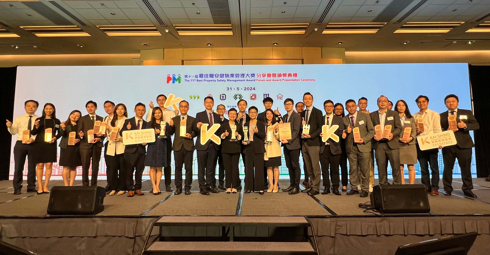

Kai Shing Management Services Limited (Kai Shing) understands the importance of safety and health in workplace, the company has been committed to ensuring the safety and health of its employees, enabling them to provide services in properties with greater peace of mind. This year, Kai Shing has received a total of 27 awards in "The 11th Best Property Safety Management Award" organised by the Occupational Safety & Health Council, including Silver Awards in "Best Property Management Award in Occupational Safety and Health", "Best Safety Enhancement Programme" and "Best Property Management Award - Residents' RMAA Works Safety Enhancement" won by Millennium City 1, 2, 3 & 6, International Commerce Centre (ICC) and Kowloon Commerce Centre (KCC) respectively. Additionally, 24 properties have obtained "Heart Caring Organization Award" also, commending Kai Shing's efforts and outstanding performance in property safety management.
Millennium City 1, 2, 3 & 6, the Silver Award winner of "Best Occupational Safety and Health Property Management", has formed a safety committee to formulate safety policies and internal safety guidelines in a timely manner, establish safety framework and provide clear safety manuals for using tools and machines etc. The team also conducted regular safety training for staff to strengthen their knowledge in occupational safety and increase their vigilance in operation to minimize accidents. Moreover, the team also conducts risk assessments for each construction project and provide corresponding control recommendations, to ensure all work procedures remains in compliance with safety policies. To further ensure all safety requirements are in place, the team also conducts daily inspection in order to create a safe and comfortable environment in the building, continuously enhancing the occupational safety and health level of the property.
As one of the iconic buildings in Hong Kong, ICC was also awarded the Silver Award in the "Best Safety Enhancement Programme". With the mission of managing the tallest building in Hong Kong, the team strictly adheres to relevant safety guidelines and regulations, while at the same time, utilizes advanced technologies to ensure a safe working environment for employees. Many daily tasks in ICC are now performing with the assistance of Artificial Intelligence (AI) and Augmented Reality Maintenance Management (ARMM) system as well. For instance, the ARMM system allows technical staff to be more flexible that they do not need to present physically for checking facilities, but still can receive maintenance information of facilities remotely via mobile devices; they can also use drones and AI analysis for glass wall inspections. These measures are able to help the team reducing the risks of doing hazardous tasks.
KCC, the Silver Award winner of "Best Property Management Award - Residents' RMAA Works Safety Enhancement", has always been dedicated to protecting employees' safety and health. The team has also been actively promoting and implementing occupational safety and health policies, they have also developed a monitoring and reporting system to ensure safety facilities and measures can be implemented in daily operation. Meanwhile, the team also conducts regular meetings to review relevant measures, and organises promotion activities regularly to raise awareness of safety for stakeholders to further prevent accidents.
Property management services cover a wide range of areas that property management practitioners have to handle various matters within properties every day. Therefore, Kai Shing places great importance on the occupational safety and health for its employees and actively creates a safer and healthier working environment, so that all employees are able to provide professional and attentive services with peace of mind, making sure our customers can experience the best services in properties managed by Kai Shing.
The list of awards received by Kai Shing in "The 11th Best Property Safety Management Award" is as follows:
| Award | Property |
|---|---|
| Best Property Management Award in Occupational Safety and Health - Silver | Millennium City 1, 2, 3 & 6 |
| Best Safety Enhancement Programme - Silver | International Commerce Centre |
| Best Property Management Award - Residents' RMAA Works Safety Enhancement - Silver | Kowloon Commerce Centre |
| Heart Caring Organization Award - Excellence Organization | Landmark North |
| International Commerce Centre | |
| Heart Caring Organization Award - Outstanding Organization | The Wings II |
| The Wings IIIA | |
| PopWalk | |
| East Point City (Commercial) | |
| Kodak House II | |
| Technology Plaza | |
| Ocean Wings | |
| Pacific View | |
| Millennium City V | |
| Millennium City 5 & apm | |
| MOKO / Grand Century Place | |
| New Town Plaza | |
| Metroplaza | |
| Yoho Midtown | |
| Blossom Garden | |
| V Walk | |
| Heart Caring Organization Award - Merit Organization | Hong Lok Yuen |
| The Leighton Hill | |
| Park Yoho | |
| Chi Fu Fa Yuen | |
| Sungib Industrial Centre | |
| NOVO LAND |